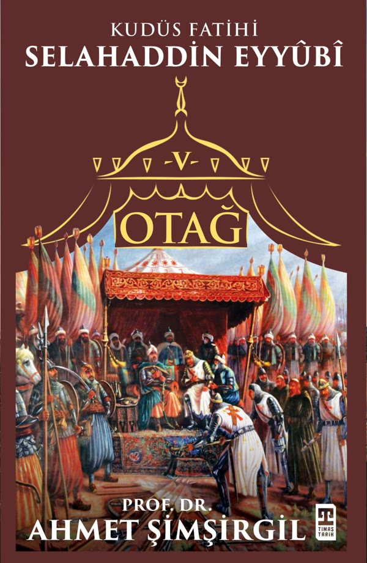

History and Contemplation · Episode 16
The Military Band's Call: We Are Ready for the Campaign
Ahmet Şimşirgil explains why Osman Gazi stood when the military band played, how the custom continued among the Ottomans and the band's message of readiness for a campaign.
Ahmet Şimşirgil · 11:28 ·
Transcript in the original Turkish
Description
Osman Gazi, Selçuklu Sultanı’ndan gelen hediyeler sırasında nevbet çalınca neden ayağa kalktı? Bu davranış neden Osmanlılarda yaklaşık 200 yıl devam etti? Nevbetin arkasındaki “Gazaya hazırız” anlayışı ne ifade ediyordu?
Prof. Dr. Ahmet Şimşirgil, Tarih ve Tefekkür programının bu bölümünde Osman Gazi’nin zaferlerden sonra gösterdiği tevazuyu, Selçuklu Sultanı’na bağlılığını ve Osmanlı’da nevbet geleneğinin taşıdığı manayı anlatıyor.
Osman Gazi, Ermeni Derbendi ve İkizce mücadelelerinde başarı elde etmesine rağmen bu başarıları kendisine mal ederek kibre kapılmıyor. Selçuklu Sultanı Gıyaseddin Mesud’a bağlılığını sürdürüyor; elde edilen ganimetlerden ve kendi hediyelerinden gönderiyor.
Selçuklu Sultanı da Osman Gazi’ye tabıl, davul, çetir, sancak, güzel atlar ve silahlar gibi beylik ve saltanat alametleri gönderiyor.
Bu hediyeler Söğüt’e ulaştığında nevbet çalınıyor. Osman Gazi ayağa kalkarak Selçuklu Sultanı’ndan gelen alametlere hürmet gösteriyor. Prof. Dr. Ahmet Şimşirgil, bu davranışın Osmanlılarda yaklaşık 200 yıl devam eden bir gelenek hâline geldiğini aktarıyor.
Aşıkpaşazade’nin yorumuna göre ise nevbet sırasında ayağa kalkmak yalnızca bir saygı göstergesi değildir.
“Biz gazaya hazırız.”
Yani kılıcı kuşanmış, Allah rızası için her an vazifeye hazır bir anlayışı ifade etmektedir.
Bölümde Osmanlı hanedanının üç temel özelliği üzerinde de duruluyor:
Gazaya ve ilahi kelimetullah yolunda hizmete hazır olmak, sofrayı insanlara açmak ve cömert olmak, yapılan her işi ahlak üzere yapmak.
Prof. Dr. Ahmet Şimşirgil, Osmanlı’nın kuruluş ruhunu anlamak için yalnızca savaşları değil; tevazu, birlik, cömertlik ve ahlak anlayışını da birlikte değerlendirmek gerektiğini vurguluyor.
Programın devamında günümüz tarih dizilerindeki entrika ve çekişme anlatılarına yönelik eleştiriler dile getiriliyor; Orhan Gazi’nin tarihî misyonunun daha doğru anlatılması gerektiği ifade ediliyor.
Bölümün sonunda ise birlik ve kardeşlik mesajı öne çıkıyor.
00:00 Giriş
00:21 Başarı Ve Kibir Tehlikesi
01:01 Osmanlı’da Manevi Eğitim
01:25 Osman Gazi’nin Zaferleri
01:51 Selçuklu Sultanı’na Bağlılık
02:09 Gıyaseddin Mesud’a Gönderilen Hediyeler
02:30 Selçuklu Sultanının Cevabı
03:12 Beylik Ve Saltanat Alametleri
04:02 Birlik Ve Beraberliğin Gücü
04:50 Hediyelerin Söğüt’e Gelişi
05:03 Nevbet Çalıyor, Osman Gazi Ayağa Kalkıyor
05:23 200 Yıl Devam Eden Gelenek
06:05 Nevbetin Asıl Manası
06:21 “Biz Gazaya Hazırız”
07:00 Osmanlı Hanedanının Açık Sofrası
07:33 Her İşi Ahlak Üzere Yapmak
07:46 Osmanlı’ya Güç Veren Üç Esas
08:26 Tarih Dizilerine Eleştiri
09:07 Orhan Gazi’nin Tarihî Misyonu
09:27 “Hiç Yakışmaz Bize Niza Eylemek”
10:06 Kardeşlik Ve Birlik Mesajı
10:43 Gençlere Tarih Şuuru
10:59 Kapanış
Tarih ve Tefekkür, Prof. Dr. Ahmet Şimşirgil’in anlatımıyla Seyf TV’de.

Books by this speaker


Adalet Ustaları
Buy

Hâkimiyet Sembolü Ayasofya Camii
Buy

Otağ V: Selahaddin Eyyûbî
Buy
From this program

History and Contemplation
A State Cannot Be Divided!
Ahmet Şimşirgil 12:33

History and Contemplation
The Constitution of the Ottoman Empire!
Ahmet Şimşirgil 14:51

History and Contemplation
Remember: You Are a Son of Ertuğrul and Osman!
Ahmet Şimşirgil 12:24

History and Contemplation
Osman Bey's Fronts of Jihad
Ahmet Şimşirgil 8:52

History and Contemplation
How Did the Renowned Raider Commander Mihal Gazi Become Muslim?
Ahmet Şimşirgil 14:03

History and Contemplation
Eastern Roman Empire Against Osman Bey
Ahmet Şimşirgil 13:48

History and Contemplation
Let the People Live So the State May Live
Ahmet Şimşirgil 11:21

History and Contemplation
The Year of Becoming a State: 1299
Ahmet Şimşirgil 12:27